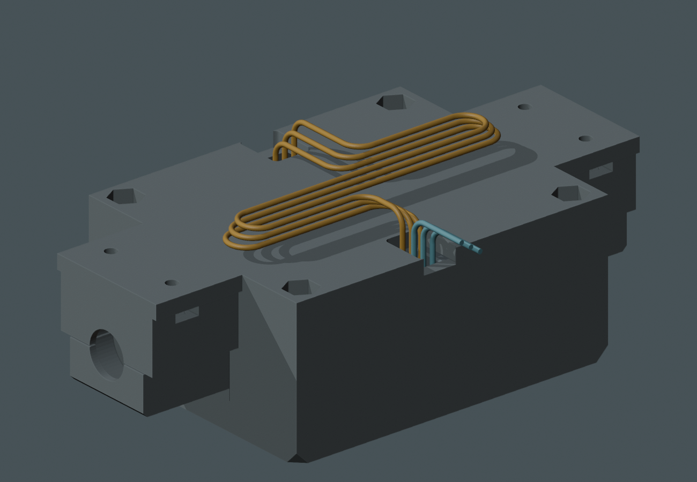
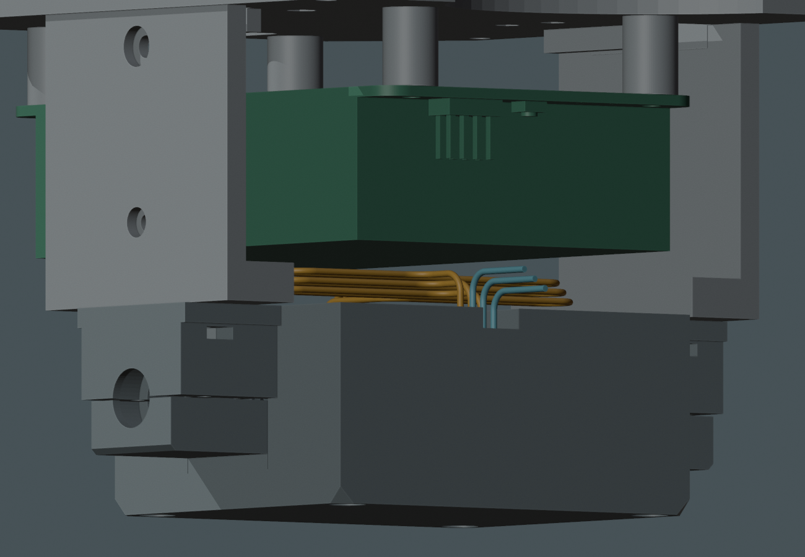
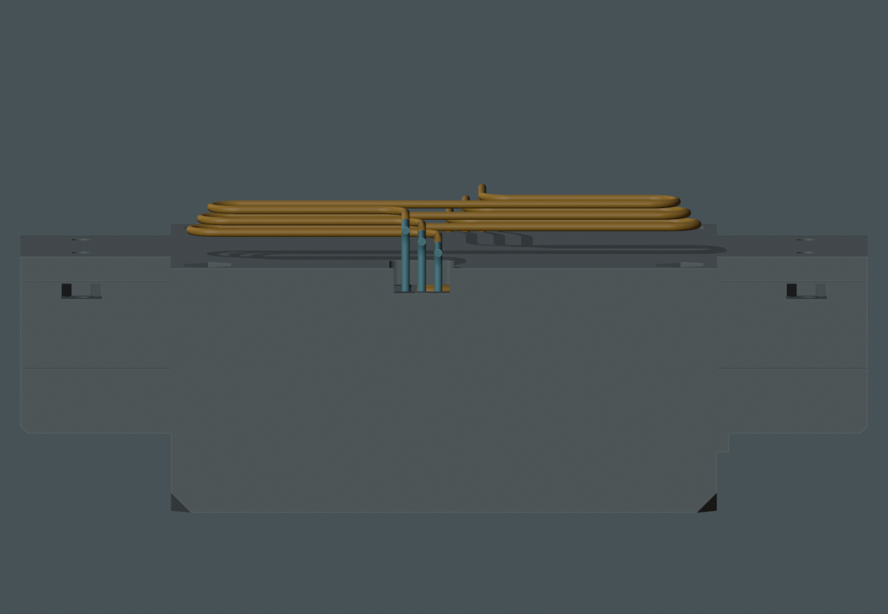

上梁出线候选
最新已按你的建议补查内部收纳路线，这根串接线可以名义收在原电机座内，不需要为 U04 使用下述两处上梁槽。本页保留旧候选对照，未采用。
用户建议：横跨两台电机的顶部横梁 · M1.58 独立候选 · 尚未应用
上梁候选的名义路径检查通过。原端壁方案沿用下方插口及下绕路线；现在已补查上梁方向。
改用上方插口作串接候选，在顶梁前后边缘各开一处 8 mm 宽、约 9.9 mm 长的浅槽；下方端壁保持连续。不增加零件或螺钉。

上梁空间与开口
补查后，上梁与 UPS 之间可以容纳这组名义余线。开口连到横梁现有边缘，允许从侧面放入导线；这套候选保留下方端壁。

候选只改变 Drive_Bridge：切削从 Z63.4 至 66.6 mm，作用于原 3 mm 顶板与端壁上沿。原下方端壁、轴承座、所有固定轴线及底盖保留；一件连续实体。移除约 470 mm³，比原端壁候选约 766 mm³ 少约 39%。切除量更少不等于承载强度已经证明。

已完成的名义检查
| 项目 | 结果与范围 |
|---|---|
| 完整串接路线 | 18 个有限组合通过：0 / 0.5 / 1 mm 外伸试值 × 6 种几何线位配对。三根线各 190 mm，线径采用用户约 1 mm；不是实际针号重排。所选 1 mm 外伸试值增粗到半径 0.6 / 0.7 mm 也未相交。 |
| 控制器侧出口 | 左下口 9 个名义短段通过，未与 U04 相交；真实新载板端点及完整 U03 仍 BLOCKED。没有因本研究发送硬件指令。 |
| 名义装入方式 | 先在台面布好电机、底盖和线，上梁从上方落下约 20 mm，同时把余线放低、展开。41 个位置中 U04 各保持 190 mm，没有硬质新增相交。保留原两块软垫接触与四处低于既有 0.01 mm³ 阈值的源轴承交叠。 |
| 螺钉与身体壳 | 四枚底盖螺钉各 69 个位置、前后身体壳各 275 个位置，未与 U04 及所示 U03 短段相交；其他线束未加入。 |
| 仍待完成 | 实际插头/端子与弯折、手持落梁操作、余线固定、完整控制器线路、全部线束并存及 PA12 打印强度。名义路径不代表全线束或实物装配放行。 |
局部 top_beam_UNADOPTED.blend （原研究引用，未收录于本快照） 是审阅候选。主模型、20 STL、电子细模和视频等 26 个保护文件保持原散列；未提交 PR，未制造、裁线或上电放行。
原始检查与边界
上梁实体与路径检查 · 名义装入检查 · 最初闭孔比较 · 原端壁候选及上口增粗失败 · 实际命令与日志
上口零外伸、增粗半径 0.7 mm 的旧局部失败仍保留。新候选的 18 组是 OD1 名义检查；增粗两组仅对所选 1 mm 外伸值检查，未声称所有增粗组合通过。真实插头外伸仍未知，不能当作 0 mm。机械试值不能成为最终供应商线束尺寸。
PROTOTYPE / UNVALIDATED · 当前仍是候选，请先确认方向和模型。